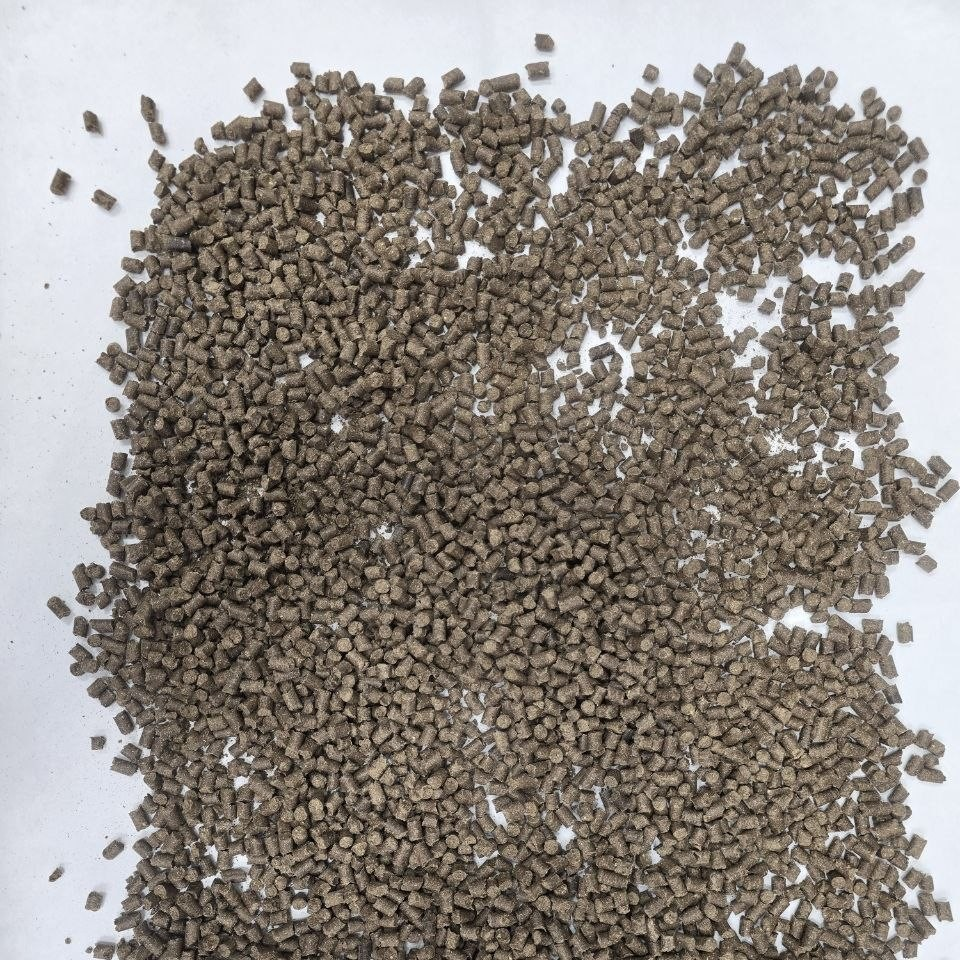
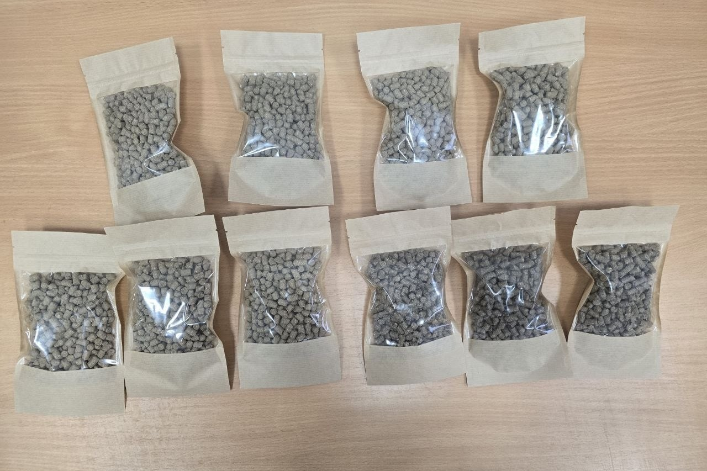

Ежегодно на одном заводе производится до 200 000 кубических метров послеспиртовой барды. Ее сушка и вывоз тратит до 40% себестоимости продукции, а скармливание жидкой барды в чистом виде имеет нестабильный состав, быстро портится и имеет риск ацидоза у животных
Традиционные комбикорма использовать невыгодно, из за растущих цен на зерно, а мпортируемые белковые добавки дорогостоящие
- Традиционные - дорого (до 40% затрат) и энергозатратно
- Скармливание жидкой барды в чистом виде - нестабильный состав, быстрая порча, риск ацидоза у животных
- Традиционные комбикорма - высокая стоимость из-за растущих цен на зерно
- Импортные белковые добавки (соевый шрот) - дороги (35-45 руб/кг) и зависят от импорта
ПОЛНОРАЦИОННЫЙ
ДЛЯ ВСЕХ ПОЛОВОЗРАСТНЫХ ГРУПП
БЕЗ ГМО
НАША КОМАНДА
Гаффарова Эльвина Рамилевна
Стратегическое планирование, координация работы команды, взаимодействие с партнерами и инвесторами, принятие управленческих решений, контроль за исполнением календарного плана
Фархутдинов Рашит Габдулхаевич
Осуществление общего научного руководства, контроль качества продукции на соответствие техническим условиям, разработка рекомендаций по совершенствованию технологии
Григориади Анна Сергеевна
Консультант, контроль качества продукции на соответствие микробиологическим требованиям
Черво Алексей Юрьевич
Обеспечение бесперебойной работы технологического оборудования, контроль технологических параметров процесса гранулирования
СОСТАВ И ФУНКЦИЯ КОМПОНЕНТОВ
Барда жидкая (послеспиртовая)
Барда сухая (послеспиртовая)
Жом свекловичный
Жмых подсолнечника
Костра льна
Пробиотик Propionibacterium freudenreichii
АНАЛИЗ ПИТАТЕЛЬНОЙ ЦЕННОСТИ ГОТОРОЙ ФОРМЫ КОМБИКОРМА


| НАИМЕНОВАНИЕИ ПОКАЗАТЕЛЯ | РЕЗУЛЬТАТ ИСПЫТАНИЙ | НД НА МЕТОД ИСПЫТАНИЙ |
|---|---|---|
| Массовая доля влаги | 7.7% | ГОСТ Р 57059-2016 - Корма, комбикорма, комбикормовое сырье. Экспресс-метод определения влаги, п.11 |
| Массовая доля сырого жира | 8,6±0,8% | ГОСТ 13496.15-2016 - Корма, комбикормовое сырье. Методы определения массовой доли сырого жира, п.9.1 |
| Массовая доля сырого протеина | 15,0±0,5% | ГОСТ 13496.4-2019 - Корма, комбикормовое сырье. Методы определения содержания азота и сырого протеина, п.8 |
| Массовая доля сырой клетчатки | 2,9±1,0% | ГОСТ 31675-2012 - Корма. Методы определения содержания сырой клетчатки с применением промежуточной фильтрации, п.6 |
| Содержание обменной энергии | Более 10,0 МГДж/кг | Методические указания по оценке качества и питательности кормов(утв. Минсельхозом России от 20.06.2002) |